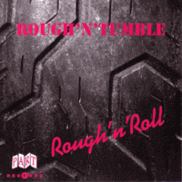

Rough 'N' Tumble - Rough'n'Roll (Album, 2006)
01 - Sweet Little Contessa / Roadrunner (6:02)
02 - Folsom Prison Blues (3:29)
03 - Don't Ya Tell Me (2:59)
04 - Tush (2:28)
05 - Can't Catch Me (3:40)
06 - My Babe (2:19)
07 - Sleepwalk (2:47)
08 - Rollin 'N' Tumblin (3:46)
09 - Linda Lu (3:55)
10 - Drivin' My Life Away (4:42)
11 - Real Gone Bastard (3:37)
12 - Oklahoma Sweetheart (4:05)
13 - Train Kept A Rollin' (2:45)
14 - Madison Blues (5:16)
15 - My Way (3:51)
© Part Records 2010 :: [614.001] © Part Records 1995 / 2006 [Digital]
Notes
Review
144/366 (Project 366)
Tearing and grooving rhythm and rockin' roll with a swampy uproar. Songs are mostly about ballad rock'n'roll and rockabilly with a noticeable shade of the so-called southern rock, perhaps. Anyway, it is really hard rollin' honk craze. The album is called "Rough'n'Roll" and this is perhaps the way it is. With tumble around and tuny harmonica as the most catchy things. Guitars solos and drums are also pretty. Entire sound of songs is a bit modern. And tracklist is full of cover versions of classic songs. Some of them are really awesome and exclusive rehashes. For example, "Train Kept A Rollin'" and "Sleepwalk" sounds surprisingly nice! "Drivin' My Life Away" is also perky cover version. There also some strollers, some melodious songs and heavy country rocking tunes. The pace is not very crushing, but rather imposing and with heavyweight rock tone. A rather energetic atmosphere and gruff vocals create a really strong impression.